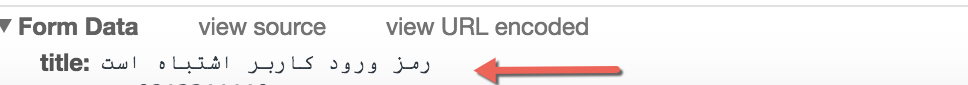
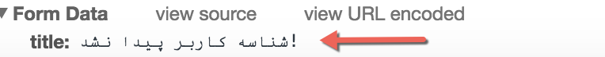
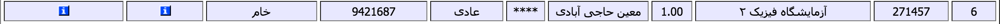
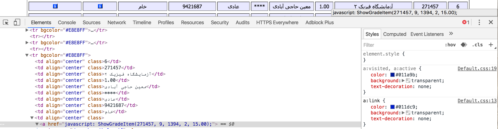
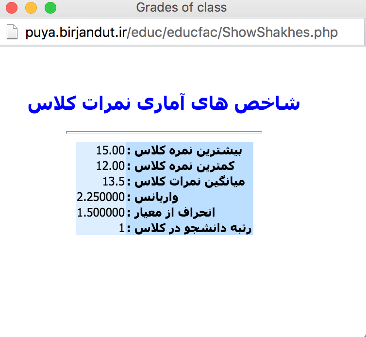
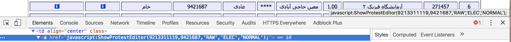
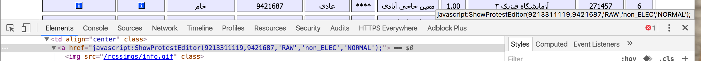

باگ های پرتال جامع دانشگاه صنعتی بیرجند
دلیل معرفی باگ:
دانشگاه ما وقتی ارزشیابی اساتید رو انجام ندید نمیزارن نمره ها رو از طریق پرتال ببینید ! و باید یک سری کار اداری مهمل انجام بدید جدا از مهمل بودن این ارزشیابی که هیچ تاثیری در چینش اساتید نداره (چون به اندازه کافی استاد نداریم) کار های اداریش خیلی وقت گیره و مسولینم معمولا تو دفترشون نیستند ! این باگ رو چندین بار گزارش دادم ولی رفع نکردند رفع کردنش فکر نکنم بیشتر از نیم ساعت زمان ببره ولی خوب ظاهرا مهم نیست و دوست دارند ملت بدون ارزشیابی یا پرداخت شهریه نمرات خودشون رو ببنید. در قسمت باگ دوم در ادامه میخونید که چطور نمره های قفل شده رو ببینید :)
این سیستم توسط دانشگاه فردوسی مشهد نوشته شده و دانشگاه صنعتی بیرجند این رو خریده و سورس کد این سیستم در سرور های دانشگاه ما نگهداری نمیشه پس مسولیت رفع این باگ دانشگاه فردوسی مشهد و شرکت وابسته که این رو توسعه داده است .
باگ اول : فرم لاگین
- برای ورود به پرتال کپچا وجود نداره میتونید اقدام به کرک کردن کنید ! (یک کپچای ساده جلو خیلی جوجه هکر ها رو میگیره ! ۱۲۰ خط کد )
- نداشتن ورود امن از طریق HttpS که در نتیجه میشه مشخصات لاگین رو شنود کرد (رایگان میتونن این رو اضافه کنید !!)
- پسورد ها با جاوا اسکریپت هش میشن و به دیتابیس پاس داده میشن (به احتمال ۹۹٪ به همین صورت در دیتابیس ذخیره میشن)
شاید با خودتون بگید که خُب که چی ؟؟؟ کی میخواد وارد پرتال شما بشه؟!! جوابتون واضحه این پروتال جامع اساتید و دانشجو هاست :) خودتو درک کنید که چه کارهای میشه باهاش کرد و نکته دوم اینکه از طریق پرتال میشه اعتراضات توهین آمیز زد، انتخاب واحد اشتباه انجام داد و ... در صفحه ورود به پرتال استاد و دانشجویان و همچنین آموزش مشکلی که در زیر میبنید وجود داشت که برای دانشجویان زیاد خطرناک نیست ولی خطر جدی استاد و آموزش را تحدید میکنه! اصولا ما نباید در مقدار بازگشتی ذکر کنیم که پسورد اشتباه وارد شده یا نام کاربری، با کمی ابتکار میتونید نام کاربری با دسترسی های بالا رو پیدا کنید و شروع به کرک کنید !  
باگ دوم : باگ های پرتال !
- امکان باز نمودن اعتراضات بسته شده !
- امکان ثبت اعتراض برای شخص دیگر
- دیدن نمرات در صورت مخفی شدن از طریق ادمین
- اگه پروتال اساتید به همین صورت نوشته شده باشه ! اساتید میتونند به جای هم دیگه اعتراضات رو جواب بدن یا نمره ثبت کنند! متاسفانه دسترسی نداشتم که چک کنم ولی با شیوه کد نویسی که در ادامه میبنید خودتون حدس میزنید (:
اول پست اشاره کردم که میخواهیم نمرات که دیدنش رو واسه ما ممنوع کردن ببینیم ! همون جوری که میبنید در فیلد نمره * گذاشته شده تا ما نتوینم ببنیم !  فیلد بعد از خام فیلد شاخص نمرات هستش بیایید کدش رو ببینیم که چه اطلاعاتی رو به چه صفحه ای ارسال میکنه تا رتبه دانشجو رو به ما نشون بده !  اطلاعاتی که به ما نشون میده :  با کمی دقت میتونیم ببینم که تابع نوشته شده در بالا چه چیزی به ما نشون میده :
- فیلد اول کد درس !
- نمیدونم
- سال تحصیلی
- نیم سال اول یا دوم
- نمره ?
این ها رو به فایل ShowShakhes.php ارسال میکنه و در یک پنجره جدید شاخص نمرات را از روی نمرات نشون میده ! از دیگر امکاناتی که این باگ به ما میده اینه که میتونیم ببینم مثلا نمره ۱۰ رتبه چند رو در کلاس داره که زیاد جذاب نیست!
روش رفع باگ : همین متغییر ها که با پی اچ پی و احتمالا بر اساس کد درس و شماره دانشجوی و نیم سال تحصیلی چاپ شده رو مستقیما پاس بدن به فرم ShowShakhes.php و اونجا رتبه رو محاسبه کنند و نشون بدن نمره رو توی سورس پیچ چاپ نکنند (:
باگ جذاب دیگه باگ اعتراض هستش ( ستون آخر در هر ردیق دکمه اعتراض نشون داده میشه ) بیایید نمونه ای از اعتراضات رو بررسی کنیم ! در صورتی که اعتراضات باز باشند مقادیر زیر رو در سورس دکمه اعتراض میبینم :  در صورتی که عتراض بسته باشه :  با مقایسه این دو میتونیم به راحتی به این نتیجه برسیم که چجوری میتونیم اعتراض ثبت کنیم حتی اگه استاد اجازه نداده باشه فقط کافیه مقدار non_ELEC رو به ELEC تغییر بدید ! ولی نکته شکه کننده اینه که این تابع داره شماره دانشجویی رو به پاس میده به فرم اعتراض!!!! من نتونستم تست کنم ولی ۹۹٪ احتمال میدم که میشه اینجوری اعتراضات رو با جایگزین کردن شماره دانشجویی فرد دیگه ای ثبت کرد ! بدست آوردن شماره دانشجوی افراد در دانشگاه ما خیلی ساده است فقط کافیه از فرمی که جهت اطلاع از شماره صندلی جلو سالن امتحانات میزنند عکس بگیرید! اسم و شماره دانشجویی دانشجو هایی که اون روز امتحان دارند رو اونجا میزنند ! (بله درسته ما در کارت ورود به جلسه ای که بردنش اجباریه شماره صندلی نداریم و مثل زمان ما قبل تکنولوژی از لیست چاپی استفاده میشه )
روش رفع این باگ ها مثل بالایی هستش
البته متغییر دومی که ارسال میشه شماره لیست نمراته که این هم روی همین فرم مذکور زده شده
بنده مسولیت سو استفاده از این احتمالی شما شیاطین رو نمیپذیرم ! و اینم بگم که در صورت سو استفاده میتونند مثل آب پیداتون کنند چون باید با یوزر خودتون لاگین کنید تا جای کس دیگه بتویند اعتراض بزنید :))
سربلند و ایمن باشید ! همیشه هم بکاپ بگیرید و امن بنویسید :))
مرتبط:
اسکریپت پایتونی برای دیدن نمرات ترم در ترمینال